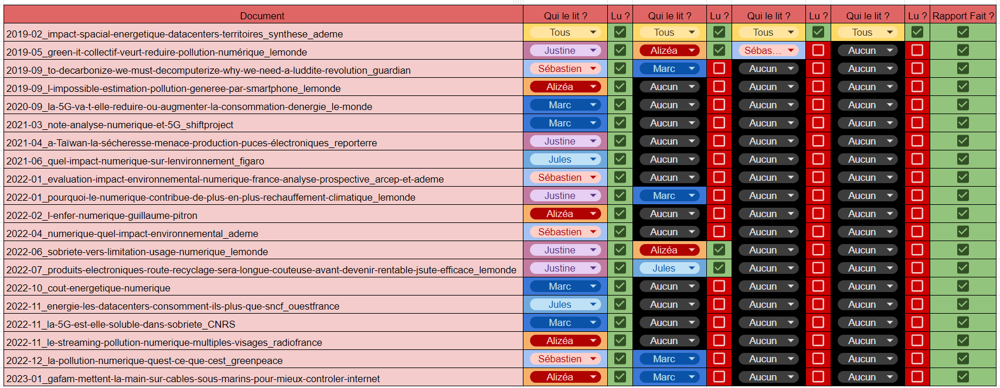

Desciptif du projet
Ce projet est un projet de cour, il nous est donc imposé.
Les projet de l'IUT du Havre sont appeller SAE, pour Situation d'Apprntisage et Évaluation.
C'est un projet de groupe, nous étions 5 personnes.
Le projet est diviser en deux question.
Pour nous aider a répondre au questions nous devions utiliser les documents fournie ainsi que des recherche personnel.
Nous avions du séparer les deux questions pour quels est chacune son propre document text,
car nous devions rendre les réponse a ces question à des date différentes.
Voici le sujet que l'on a reçus
Et voici le tableu de partage de lecture des documents,
nous avions 20 documentde toute nature.
Nous avions des pages web de journal, des articles, des infogrphies.
Nous avions beaucoup de document long a lire, nous avons tous lu au moins trois document.

Question 1
Consigne
Quels sont les impacts du numérique sur l’environnement ?
Explication
Notre document fait 19 pages, nous avons fait deux partie,
- la première est la définition du numérique,
- la deuxième est l'impact du numérique sur le monde.
Preuve
Question 2
Consigne
En tant que développeur et professionnel de l’informatique, sur quels leviers pouvez-vous agir pour limiter ces impacts ?
Explication
Notre document fait 12 pages, nous avons fait trois partie,
- Conception de logicel et site web éco-responsable,
- Limiter vos impacts dans le cadre de vos activités professionnelles et personnel,
- Les outils utiliser durant la SAE.
Preuve
Prensentation oral
Consigne
Presentation oral sur la question 2
Explication
Nous devions utiliser un diapo pendant le présnetation oral, nous l'avons donc conçus sur Canvas.
Notre diapo comporte 17 diapositives.
Notre diapo reprend le même plan que la question 2 de cette SAE, il n'y a que deux diapo qui diffère de notre document de la question 2, la diapositive 6 et 8.
Sur la diapositive 6, nous avons utiliser ecoindex,
qui est un site qui permet de tester l'impact écologique d'un site,
nous l'avons utiliser sue le site d'amazon.
Amazon a récolter une note de 8/100. Ce qui montre que d'apès les critère du site ecoindex,
qui amazon malgès le faite que se soit un site web visité par le monde entier,
il n'est pas conçu de manière écologique.
Sur la 8, nous avons aussi mis un comparatif de différent language informatique sur trois catégoriequi sont:
- en temp d'éxécution,
- en place de mémoire,
- et en énergie dépense pour son éxécution.
Preuve
Ressource utilisé
- Les documents fournie dans ce projet
- Internet
- Etudiant des 2eme année du But Informatique du Havre
- Les profeseur du But Informatique du Havre
- Google drive, doc, sheet
- Canvas
- Discord
Dificulté rencontré
- Le partage de document était laborieux car ils ne faisant pas tous la même taille,
- la bonne compréhenstion des documents
- la collecte des informations qui nous serrai pertinante pour répondre a notre thématique
- la vérification des données récolter
Retour des Professeurs
Les retour de professeur se sont fait à l'oral pandant notre présentation oral.
Autres situations